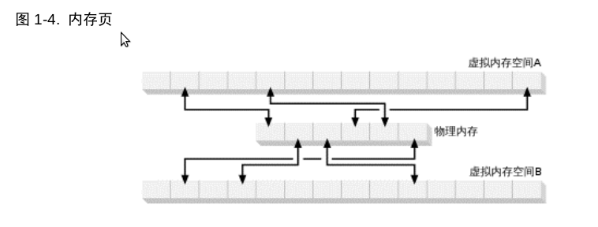

简介
日期: 2012-03-30 16:03
I/O与CPU时间比较
-
数据处理时间一般比较快
-
数据I/O比较慢，往往不是一个数量级。
-
代码优化所带来的的回报，可能被低效的i/o轻易抵销掉。
Java的传统I/O
-
CPU已经基本上不在是束缚，JVM的执行效率已经很高，和本地代码差距已不大。
-
JVM的传统I/O实现有问题
-
操作系统喜欢大块移动数据，像铲车一样。
-
JVM喜欢喜欢操纵小数据，比如一个字节或几行文本，像小铲一样。
-
JVM要花大量的时间拆分数据，拷贝一小块数据要往返多层对象。
-
传统I/O其实也可以操作大数据，使用RandomAccessFile,效率很高。
I/O概念
-
缓冲区
-
内核空间与用户空间
-
虚拟内存
-
分页技术
-
文件I/O与流I/O
-
多工I/O(就绪性选择）
缓冲区
-
I/O就是对缓冲区的操作
-
读：将缓冲区用数据填满
-
写：将缓冲区的数据排干
-
把数据从外部磁盘读入运行中的进程内存区的过程
-
进程向内核发起系统调用read(), 要求其缓冲区填满
-
内核向磁盘控制硬件发起命令，要求从外部磁盘读入数据。
-
DMA(Direct Memory Access)将数据读入内核空间缓冲区，这一步由DMA完成，无需CPU协助。
-
内核将数据从内核空间缓冲区读入进程调用read()时指定的进程缓冲区
-
内核空间与用户空间区别
-
用户空间，常规进程驻留区域，非特权空间，代码无权直接访问硬件。
-
内核空间，操作系统驻留区域，特权空间，代码可以直接访问硬件。
-
进程发起I/O请求时， 通过一系统调用将控制权交给内核
系统调用open() read() write() close()
-
进程请求的数据可能已经在内核空间，而无需从外部磁盘读取，这时只是简单的将数据拷贝进用户缓冲区。
-
为什么需要内核空间，而不是直接读入用户空间
-
硬件通常不能直接访问用户空间
-
DMA 操作的是固定块大小的数据
-
用户请求的数据大小不一，是不整齐的
-
内核负责分解，整合数据，充当了中间人的角色.
发散/汇聚
-
进程只需一个系统调用,就可以传入多个缓冲区,这样内核就可以顺序填满或排干多个缓冲区.
-
读的时候,内核将数据分散开填入多个缓冲区.
-
写的时候,内核将多个缓冲区排干,将数据汇聚起来, 写入磁盘.
-
好处:
-
只需一个系统调用,避免多次系统调用
-
内核可以优化处理
-
如果是多CPU,可以同时对多个缓冲区进行填充事排干
虚拟内存
虚拟内存,就是以虚拟的内存地址代替真实的物理内存地址:
-
一个以上的虚拟内存地址可以指向同一个物理内存地址.
-
虚拟内存空间可能大于物理内存
多重映射
-
可以将内核缓冲区和用户缓冲区映射到相同的物理地址上
-
可以避免把数据从内核缓冲区再次拷到用户缓冲区
-
前提:
-
内核缓冲区和用户缓冲区使用相同的页对齐
-
缓冲区大小必须是磁盘控制器块(通常是512字节)的倍数
内存页
-
操作系统通常把内存地址空间划分为页
-
页也就是固定大小的字节组
-
页的大小通常为磁盘块的整数倍,通常为2次幂,为了寻址简单
-
典型的页大小:1024 2048 4096
-
虚拟内存页与物理内存页总是相同

分页
-
为了支持虚拟内存的寻址空间大于物理内存的地址空间
-
必须进行虚拟内存分页, 经常称之为交换,它是是在进程层面完成的,而非页层面
-
也就是虚拟内存的内存页可以继续存在于外部磁盘中,这样就可以空出物理内存,供其他当前要使用的虚拟内存页使用.
-
物理内存充当了虚拟内存页的高速缓存
-
所谓分页区,就是那些调出物理内存,转而存到外部磁盘的虚拟内存页
-
下图显示了4个进程,每个进程拥有自己的虚拟空间,进程A有5个虚拟内存页,其中A1,A4两个虚拟内存页在物理内存,其他在分页区,即存储在磁盘上.
-
内存页的大小是磁盘块的倍数,这样内核就可以直接命令磁盘控制硬件将内存页存储到磁盘上, 需要进再装入.
-
这样所有的磁盘I/O都在页层面完成
-
对于采用分页技术的现代操作系统,这是数据往来于磁盘与物理内存的唯一方式
内存页调度
MMU
-
现代CPU包含一个MMU,内存管理单元.
-
逻辑上位于CPU与物理内存之间.
-
它包含了虚拟内存地址向物理内存地址转换时所需的映射信息.
寻址过程
-
CPU请求一内存地址.
-
由MMU确定其所在的虚拟内存页号,通过对地址移位或屏蔽位实现.
-
由MMU将虚拟内存页号转换为物理内存页号,这一步由硬件完成,速度极快
-
但如果不存在对应的物理内存页,MMU向CPU提交一个页错误.
-
页错误导致一个陷阱(类似系统调用),控制权被转交给内核,并附带上出错的虚拟内存地址.
-
下面会进行页有效性验证
-
内核安排页面调入操作,将所缺失的页读回物理内存.
-
这会导致别的页被移出物理内存,好空出位置.
-
如过将要被移出的页被碰过了(自创建或调入以来,内容发生了改变),
首先执行调出操作,将页内容拷贝到磁盘上的分页区.
-
如果页有效性验证不通过,也就是所请求的虚拟内存地址不是一个有效的地址(不属于执行进程的任何一个内存段),
这会产生一个段错误.
-
这时控制权交给内存的另一部分,往往导致进程被强制关闭.
-
如果出错的页通过了验证,MMU随即刷新映射信息
-
用户进程得以继续，而它对于以上过程不会有任何察觉，一切都是在不知不觉中进行。
文件I/O
文件I/O属于文件系范畴。
磁盘:
-
磁盘把数据存储在扇区上，一个扇区通常为512字节
-
磁盘是硬件设备
-
磁盘对文件一无所知
-
磁盘提供了一系列的数据存取窗口
-
磁盘扇区和内存页很像：
-
统一大小，可以作为大的数组被访问
文件系统:
-
是一个更高层次的抽象
-
是一种对磁盘数据（或其他块设备的数据）进行安排、解释的独特方式。
所有的I/O都是通过页面调度完成的
页面调度仅发生在磁盘扇区与内存页之间的直接传输
而文件 I/O 则可以任意大小、任意定位。那么,底层的页面调度是如何转换为文件 I/O 的?
文件系统还有个页的概念,其大小或者与基本内存页一致,或者是其倍数。典型的文件系统页从 2,048 到 8,192 字节不等,且始终是基本内存页大小的倍数。
采用分页技术的操作系统执行 I/O 的全过程可总结为以下几步:
-
确定请求的数据分布在文件系统的哪些页(磁盘扇区组)。磁盘上的文件内容和元数
据可能跨越多个文件系统页,而且这些页可能也不连续。
-
在内核空间分配足够数量的内存页,以容纳得到确定的文件系统页。
-
在内存页与磁盘上的文件系统页之间建立映射。
-
为每一个内存页产生页错误。
-
虚拟内存系统俘获页错误,安排页面调入,从磁盘上读取页内容,使页有效。
-
一旦页面调入操作完成,文件系统即对原始数据进行解析,取得所需文件内容或属性信息。
写操作:
-
对文件进行写操作，会导致文件系统页变脏
-
随后的页面调出，会将数据同步到磁盘上
新建文件:
-
将文件映射致电空的文件系统页
-
随后的写操作将数据同步到磁盘上
内存映射文件
内存映射 I/O 使用文件系统建立从用户空间直到可用文件系统页的虚拟内存映射。这样做有几个好处:
-
用户进程把文件数据当作内存,所以无需发布 read( )或 write( )系统调用。
-
当用户进程碰触到映射内存空间,页错误会自动产生,从而将文件数据从磁盘读进内存。如果用户修改了映射内存空间,相关页会自动标记为脏,随后刷新到磁盘,文件得到更新。
-
操作系统的虚拟内存子系统会对页进行智能高速缓存,自动根据系统负载进行内存管理。
-
数据总是按页对齐的,无需执行缓冲区拷贝。
-
大型文件使用映射,无需耗费大量内存,即可进行数据拷贝。
如果数据缓冲区是按页对齐的,且大小是内建页大小的倍数,那么,对大多数操作系统而言,其处理效率会大幅提升。
文件锁定
-
文件锁机制允许一个进程阻止其他进程访问某文件，或限制其存取方式。
-
用来控制共享信息的更新方式，或用于事务隔离
-
锁定可以发生于细微的层面，甚至到一个字节
-
锁定与特定的文件相关
文件锁分为 共享锁 和 独占锁：
-
多个共享锁可以同时对同一文件的同一区域起作用
-
独占锁要求相关区域不能有其他锁在起作用
-
进程A需要读取，获得共享锁
-
进程B需要读取，此时也可以获得共享锁
-
写进程需要写，它需要独占锁，但这时已有AB的共享锁存在，无法获得，被阻滞。
-
写进程直到没有任何其他锁的存在，才能获得独占锁。
-
写进程获得独占锁。
-
进程A需要读取，需要共享锁,但已有独占锁，无法获得
-
进程B需要读取，需要共享锁,但已有独占锁，无法获得
-
直到没有了独占锁，才能获得共享锁
建议型锁 和 强制型锁：
建议型锁：
-
可以向请求的进程提供当前的锁定信息
-
操作系统不强制锁定
-
由相关进程根据锁定信息进行协调
-
unix 与 类unix 通常采用
强制型锁：
-
由操作系统或文件系统强制执行
-
进程对锁定信息知道与否，都会阻止其对文件锁定区域的访问
-
微软采用
信赖强制型文件锁的程序是不可移植的,
也就是程序不关心文件锁定，由操作系统或文件系统帮忙。
也就是假定文件锁为建议锁，各个程序之间使用一致的文件锁，是唯一可行的跨平台策略
流I/O
文件I/O是面向块的，也有面向流的。又如：TTY 打印机 网络连接
操作系统允许把流I/O置于非块模式:
-
进程可以查看流上有没有输出
-
有输出进行处理
-
没输出可以先去干其他的
就绪性选择:
-
与非块模式类似
-
但查看流是否就绪的工作交给了操作系统
-
进程可以命操作系统查看一系列的流，并在有流就绪时通知进程
-
这样使用单一代码和单一线程，可以实现多活动流的多路传输。
*注：等待流就绪是很耗时的，jdk中传统的Socket实现是直接读写的，这时并不知道流是否就绪，如果没有就绪就会阻塞，这是效率不高的核心地方。
NIO中的socket,使用就绪选择，就绪后才去读写，线程就会很高效了。